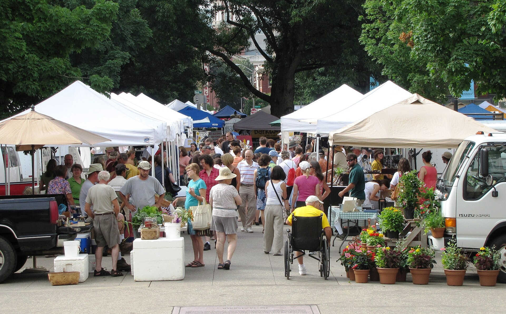

By the end of class you'll know the four ways researchers answer a question, and you'll see that technical writing is never neutral: a claim on a label is a choice someone made. You'll leave with your own first research topics, in your words, not mine.
Product A: All-Natural, Farm Fresh, Cage-Free, Wholesome.
Product B: USDA Organic, Certified Humane, Certified Regenerative.
We're doing this with eggs, but the real target is bigger: how do you decide whether a claim is true? That's the move you make all semester, and out in the field every time you run an experiment or test someone else's claim.
Sounding better and being better aren't the same thing. If you had to prove which eggs are genuinely better for you and for the planet, and which claims are just vibes, where would you even start?
"USDA Organic," "Certified Humane," "Certified Regenerative," "Cage-Free." A body or a law defines the term and checks it.
"All-Natural," "Farm Fresh," "Wholesome," "Made with Real Goodness." They sound like something and mean almost nothing.

Literature review. Find what has already been written and published on the question.
Discourse or content analysis. Study the texts, labels, and language themselves for patterns.
Surveys and interviews. Put the question to real people and record what they say.
Quantitative. Measure it in numbers you can compare.
Open your Research Notebook and go to Entry 1a.
Asking a researchable question. A strong-vs-weak card sort, then turning a topic into a real research question (Notebook Entry 2a).
Nothing due today. P1 Literature Review: Week 5. Notebook check-ins: midterm (Week 8) and end of term (Week 15).